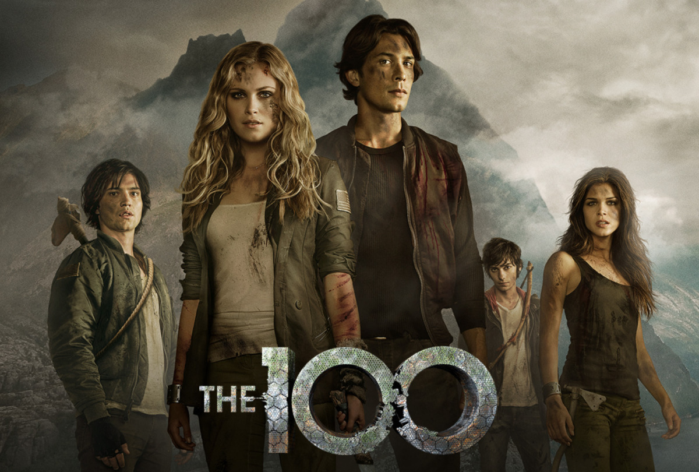

The office
Michael es el gerente de una empresa papelera de Pensilvania en la que tiene bajo su mando a personajes
como Dwight, su asistente; Pam, la recepcionista; Jim, un vendedor, o Ryan, un joven con contrato
temporal que pronto se dará cuenta de que en esta compañía nada es lo que parece.
"The Office" es
un 'remake' americano de la exitosa serie británica del mismo título, en la que, bajo un estilo de
falso documental, se ofrece un retrato políticamente incorrecto de las relaciones de poder y sumisión
que se establecen dentro del lugar de trabajo. El cómico Steve Carrell ("Pequeña Miss Sunshine"),
encabeza el reparto interpretando al histriónico e hiperactivo jefe de la oficina, papel por el que
obtuvo el Globo de Oro al mejor actor televisivo de comedia. Además, la serie acumula tres premios Emmy
(los Oscars de la pequeña pantalla)
La primera temporada sólo tuvo seis episodios y se filmó en una oficina de verdad. Para escribir la
serie, el productor contrató a cuatro guionistas: Michael Schur, B.J. Novak, Paul Lieberstein y Mindy
Kaling.
Actualmente la serie se encuentra disponible en tres plataformas de streaming que son: Netflix,
HBO Max y Amazon PrimeVideo, en estas tres plataformas la serie esta disponible con sus 9 temporadas.
Personajes principales:
- Michael Scott: Interpretado por, Steve Carell
- Jim Halpert: Interpretado por, John Krasinski
- Dwight Schrute: Interpretado por, Rainn Wilson
- Pam Beesly: Interpretado por, Rainn Wilson
- Kelly Kappor: Interpretado por, Mindy Kalling
- Ryan Howard Interpretado por, B.J. Novak

The 100
Noventa años después de que una guerra atómica haya destrozado la civilización,
una estación espacial, denominada El Arca, envía a cien delincuentes jóvenes
supervivientes de vuelta a la Tierra para repoblar el planeta, que parece tener una
atmósfera inhabitable. Los jóvenes descubren que en la Tierra existen diferentes
pobladores, enfrentándose
en su misión a diversos peligros.
Está basada en una serie de novelas juveniles
escritas por Kass Morgan, editadas en español por Alfaguara: “Los 100” (2013), “Día 21”
(2014), “Vuelta a La Tierra” (2015) y “Rebelión” (2016).
Esta escritora podrá gustar a quienes disfruten con la lectura de libros de Veronica Roth,
Suzanne Collins o James Dashner.
La serie es una mezcla de drama adolescente, acción, ciencia-ficción y fantasía con claves
de aventura post-apocalíptica de supervivencia y colonización en ambiente futuro distópico.
Puede tener influencia de la novela “El Señor De Las Moscas” de William Golding.
Actualmente la serie se encuentra disponible en la plataforma de streaming Netflix
Personajes principales:
- Clarke Griffin Interpretado por, Eliza Taylor
- Bellamy Blake Interpretado por, Bob Morley
- Octavia Blake Interpretado por, Marie Avgeropoulos
- Lexa Interpretado por, Alycia Debnam-Carey
- Raven Reyes Interpretado por, Lindsey Morgan
- John Murphy Interpretado por, Richard Harmon

Alice in Borderland
Alice in Borderland es una serie basada en el manga homónimo que sigue la historia de tres
amigos, Arisu, Karube y Segawa, cuyas vidas creen que son muy aburridas a pesar de ser un trio
de delincuentes que asisten al instituto. Durante una celebración de fuegos artificiales,
Arisu desea poder vivir en un mundo que esté lleno de constantes emociones para él. Lo que
no sabe es que su deseo es concedido y los tres son transportados a un mundo paralelo
aparentemente post-apocalíptico donde tienen que sobrevivir mientras compiten en peligrosos
juegos.
La serie es exclusiva de la plataforma de streaming Netlfix y se encuentran
disponibles sus 2 temporadas.
Personajes principales:
- Ryohei Arisu Interpretado por, Kento Yamazaki
- Tao Tsuchiya Interpretado por, Yuzuha Usagi
- Chishiya Interpretado por, Nijiro Murakami
- Karube Interpretado por, Keita Machida
- Chota Interpretado por, Yuki Morinaga